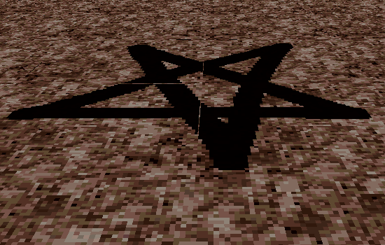
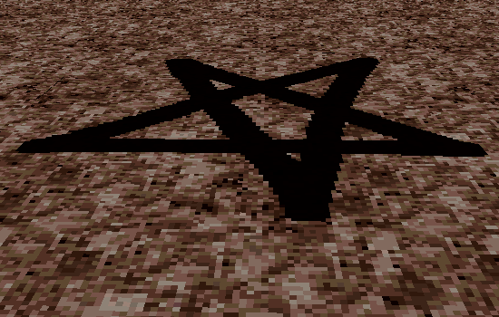

Texture Bleed
Texture bleed occurs when an edge of a texture wraps to the other side as it is being tiled. Normally this is fine, and with texture filtering, it helps with blending as the textures tile repeatedly. However there are cases where you have to break a large texture into pieces and the bleed over will cause seems when you piece the texture back together on a map. This is not usually a problem on walls for PC ports, where textures can be large, however on the Nintendo 64 and floors/ceilings there are limits to texture sizes. Specifically on the floors and ceilings, textures will be sized to fit a 64 by 64 unit space on PC, thus you will have to consider texture bleed over. And with texture filtering, texture bleed becomes exacerbated.
To fix the bleed over effect inbetween the pieced-together textures you will need to edit the textures. First copy the line of pixels on the edge of the texture where the bleed over happens and then paste it on the opposite (outer) edge. Do this for all textures which are along the bleed over seem. In this way, the bleed over will blend with the pixels at the seem, and the seems will no longer be visible. Consequentially, the textures will now have a single odd-looking line of pixels on their outer edges. To make these disappear, in the map you use these in, shrink the outer edge of the vertex or sector in size by one or two units (which corresponds to one or two pixels).
An example WAD demonstrating this procedure can be downloaded here.